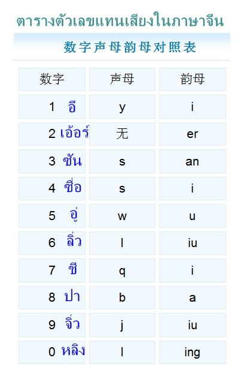

ตัวเลขภาษาจีนมีอะไรบ้าง

ภาษาจีนใช้ระบบการนับเลขที่เรียงตามลำดับหลักคล้ายกับภาษาไทยมาก โดยเริ่มจำจากพื้นฐานตัวเลขศูนย์ถึงสิบ จากนั้นจึงนำคำระบุหลักมาต่อท้ายเพื่อบอกค่าของจำนวน โดยหลักพื้นฐานประกอบไปด้วยหลักสิบ หลักร้อย หลักพัน และหลักหมื่น ซึ่งระบบการนับของจีนจะมีความแตกต่างจากสากลตรงที่คนจีนจะตัดช่วงการนับคำศัพท์ใหม่ทุกๆ สี่หลักหรือทุกๆ หลักหมื่น ในขณะที่สากลตัดทีละสามหลักหรือหลักพัน ดังนั้นภาษาจีนจึงไม่มีคำศัพท์เฉพาะสำหรับหลักแสนหรือหลักล้านเหมือนไทย แต่จะใช้วิธีนับทบขึ้นไปจากหลักหมื่น เช่น การบอกว่าหนึ่งแสนจะพูดว่าสิบหมื่น การบอกว่าหนึ่งล้านจะพูดว่าหนึ่งร้อยหมื่น และเมื่อต้องการนับไปจนถึงหลักร้อยล้านจึงจะมีคำศัพท์เฉพาะขึ้นมาใหม่อีกคำหนึ่งสำหรับการประสมตัวเลขเข้าด้วยกัน สามารถเรียงคำตามลำดับจากหลักใหญ่ไปหาหลักเล็กเหมือนภาษาไทยได้ทันที เช่น หากต้องการพูดเลขสิบห้าก็นำคำว่าสิบมาวางหน้าคำว่าห้า หากเป็นเลขสามสิบก็นำคำว่าสามมาวางหน้าคำว่าสิบ และถ้าเป็นเลขที่ซับซ้อนขึ้นก็เพียงแค่ไล่ทีละตำแหน่ง เช่น สามร้อยห้าสิบสอง ก็พูดเรียงเป็นสาม-ร้อย-ห้า-สิบ-สอง ตามตัว ตัวเลขสองในภาษาจีนมีข้อควรระวังคือมีคำเรียกสองแบบ โดยแบบแรกใช้สำหรับการนับเลขเรียงลำดับทั่วไปหรือเลขท้ายหลักสิบ และแบบที่สองใช้สำหรับบอกปริมาณหรือจำนวนของสิ่งของรวมถึงใช้ในหลักร้อยหลักพันขึ้นไป นอกจากนี้ยังมีกฎสำคัญอีกข้อคือหากมีเลขศูนย์คั่นอยู่ระหว่างหลักที่มากกว่าหลักสิบ จะต้องออกเสียงคำว่าศูนย์สะกดลงไปด้วยเสมอเพื่อเชื่อมหลัก ไม่ปล่อยข้ามไปเหมือนภาษาไทย